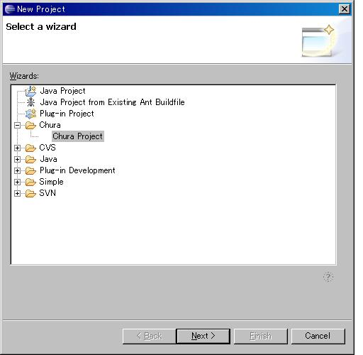
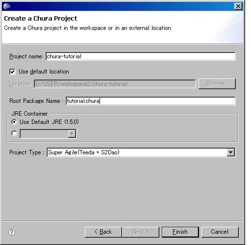

|
 |
|||||
目次Doltengを使う場合Seasar2を最も簡単に試すには、Eclipseを使うのがお勧めです。 次のソフトウェアをインストールしておきます。
JDK5.0をこのリンクから指示に従ってインストールします。 既にインストール済みの場合はその必要はありません。 次にJDK1.5がPCのデフォルトのJavaになっているのか確認します。 コマンドプロンプトからjava –versionを実行してください。 D:\USER\workspace2\teeda<java -version java version "1.5.0_07" Java(TM) 2 Runtime Environment, Standard Edition (build 1.5.0_07-b03) Java HotSpot(TM) Client VM (build 1.5.0_07-b03, mixed mode, sharing) 上記のようにバージョンが1.5.0_xxxのように表示されればOKです。 もし、OKでない場合は、環境変数のJAVA_HOMEとPATHを確認してください。 Eclipseのバージョン3.2をこのリンクから指示に従ってインストールします。 既にインストール済みの場合はその必要はありません。 標準のJDKのバージョンが1.5系でない場合、Eclipseの起動引数に eclipse.exe -vm "C:\Program Files\Java\jdk1.5.0_07\bin\javaw.exe" のように1.5系のjavaw.exeを指定する必要があります。 Tomcat5.5.xをこのリンクから指示に従ってインストールします。 既にインストール済みの場合はその必要はありません。 DoltengとDbLauncherは、Seasarプロジェクトで開発されているEclipse用のPluginです。 Tomcat LauncherはSysdeo社が開発しているPluginですが、Seasarプロジェクトの更新サイトからインストールすることが出来ます。Eclipseのメニューから[Help] -> [Software Updates] -> [Find and Install…]を選択し、 Install/Updateのダイアログを表示させます。 [Search for new features to install]のラジオボタンをチェックして[Next]ボタンをクリックします。 [New Remote site]ボタンをクリックして[Name]を[Seasar Plugin3.2]、 [URL]に[http://eclipse.seasar.org/updates/3.2/]を入力して[OK]をクリックします。 [Finish]ボタンをクリックするとインストールする候補として、 DoltengとDbLauncher、Tomcat Launcherが出てくるので、これらをチェックしてインストールしましょう。 既にインストール済みの場合はその必要はありません。 インストールが終わったら、Tomcat Launcherの設定を行います。 メニューの[Window] -> [Preferences…] -> [Tomcat]を選択してください。 Tomcatバージョンにバージョン5.xを選択し、Tomcatホームにインストールしたディレクトリを指定します。 コンテキスト宣言モードにコンテキストファイルを選び、[OK]をクリックします。 これで、Tomcat Launcherの設定は完了しました。 早速、Tomcatを起動してみましょう。メニューから[Tomcat] -> [Tomcat起動]を選択して、Tomcatを起動します。 エラーなしに無事に起動したのを確認して、一旦、Tomcatを停止させましょう。 メニューから[Tomcat] -> [Tomcat停止]を選択します。 日本語でプロパティファイルを入力するためのプラグインとしてプロパティエディタを このリンクから指示に従ってインストールします (必須ではありません)。 既にインストール済みの場合は、その必要はありません。 すべてのインストールがうまく行ったかどうかを確認するために、Hello Worldと表示する単純な画面を作ってみましょう。 Eclipseのメニューから[File] -> [New] -> [Project]を選びます。 図1のようなダイアログが表示されるので、[Chura Project]を選択します。  [Next]のボタンをクリックしてください。 図2のように、[Project name]に[chura-tutorial]、 [Root Package Name]に[tutorial.chura]と入力し、 JREコンテナーが[Use Default JRE(1.5)]になっていることを確認します。  [Project type]に[Super Agile(Teeda + S2Dao)]を選択し、 [Finish]ボタンをクリックしてください。chura-tutorialのプロジェクトが作成されます。 プロジェクトを右クリックして、[Tomcatプロジェクト] -> [Tomcatのコンテキストを更新]を選択します。 これで開発を始めるための必要な設定は完了しました。 メニューから[Tomcat] -> [Tomcat起動]を選択して、Tomcatを立ち上げます。 HOT deployで開発するので、アプリケーションサーバを起動したままで開発することが可能です。 プロジェクトのツリーを開き、src/main/webapp/viewを右クリックして[New] -> [File]を選びます。 [Enter or select the parent folder]に[chura-tutorial/src/main/webapp/view/hello]と入力し、 [File name]に[hello.html]と入力して、[Finish]ボタンをクリックします。 ファイルが作成されたので、Package Exploreからhello.htmlを右クリックして[Open With] -> [Text Editor]を選びます。 次のようにHTMLを入力してください。 <html> <body> Hello World </body> </html> 入力が終わったら、hello.html を右クリックして、[Dolteng] -> [View on Server]を選びましょう。 http://localhost:8080/chura-tutorial/view/hello/hello.htmlにアクセスするはずです。 無事にHello Worldと表示されたらプロジェクトの設定はうまくいっています。 Doltengを使わない場合Doltengを使わないSeasar2の設定方法は次のようになります。 S2-FrameworkSeasar2の基本機能(S2Container, S2AOP)を利用する場合には、S2.4.x.zipを解凍してできたseasar2ディレクトリの以下のファイルをCLASSPATHに含める必要があります。
S2-ExtensionSeasar2の拡張機能(S2JTA, S2DBCP, S2JDBC, S2Unit, S2Tx, S2DataSet)を利用する場合には以下のファイルを追加でCLASSPATHに含める必要があります。
アプリケーションの実行環境により、J2EE関連Jarファイルのいずれが必要になるかが異なります。 S2JTAまたはS2Txを使う場合アプリケーションの実行環境により、geronimo-jta_1.1_spec-1.0.jarまたはgeronimo-jta_1.1_spec-1.0-tsr.jarが必要になります。
S2TxでEJB互換機能を使う場合アプリケーションの実行環境により、geronimo-ejb_2.1_spec-1.0.jarが必要になります。 ※S2-TigerでEJB3を使う場合は必要ありません．
S2Container用のプラグインKijimunaも是非ご利用ください。 S2-TigerJava5対応機能を使いたい場合は､S2Tiger-2.4.x.zipを解凍してできたs2-tigerディレクトリの以下のファイルをCLASSPATHに含める必要があります。
オプションのJarファイルは、S2JDBCやEJB3、JPAのサポート機能をJavaEE5対応でない環境で使う場合に必要となります。詳細は以下の表を参照してください。 S2JDBC拡張機能またはJPAを使う場合アプリケーションの実行環境により、gegeronimo-jpa _3.0_spec-1.0.jarが必要になります。
EJB3を使う場合アプリケーションの実行環境により、geronimo-annotation_1.0_spec-1.0.jar、geronimo-ejb_3.0_spec-1.0.jar、geronimo-interceptor_3.0_spec-1.0.jarが必要になります。
|
|||||||||||||||||||||||||||||||||||||||||||||||||||||||||||||
| Copyright© 2004-2005, The Seasar Foundation and the others. All rights reserved. |